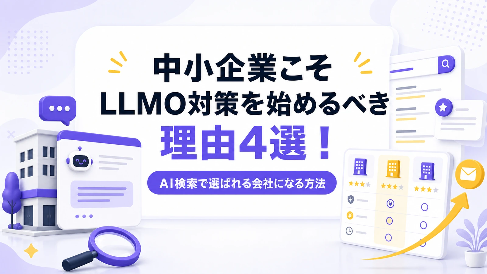
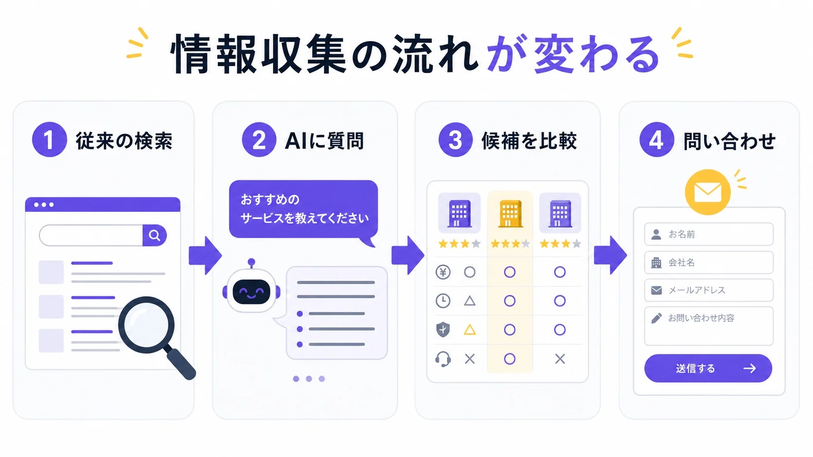
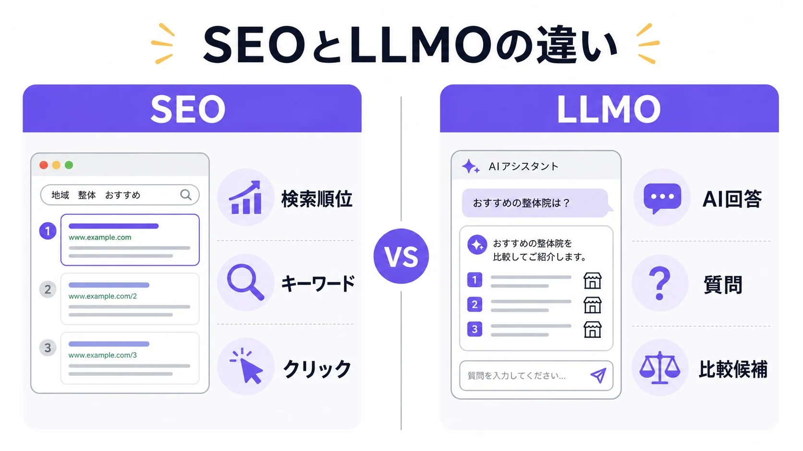
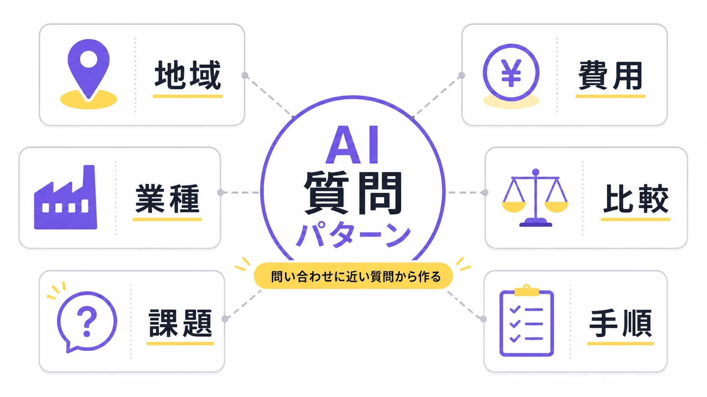
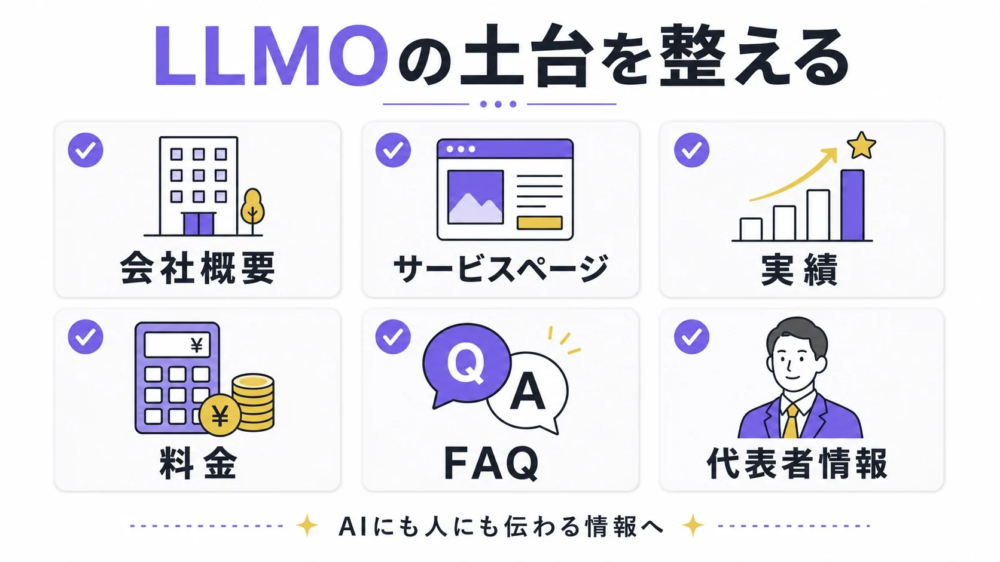
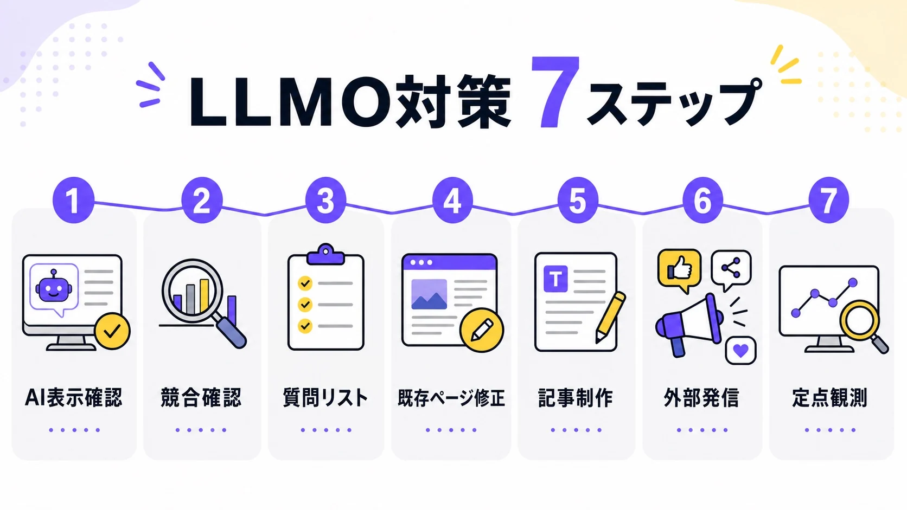
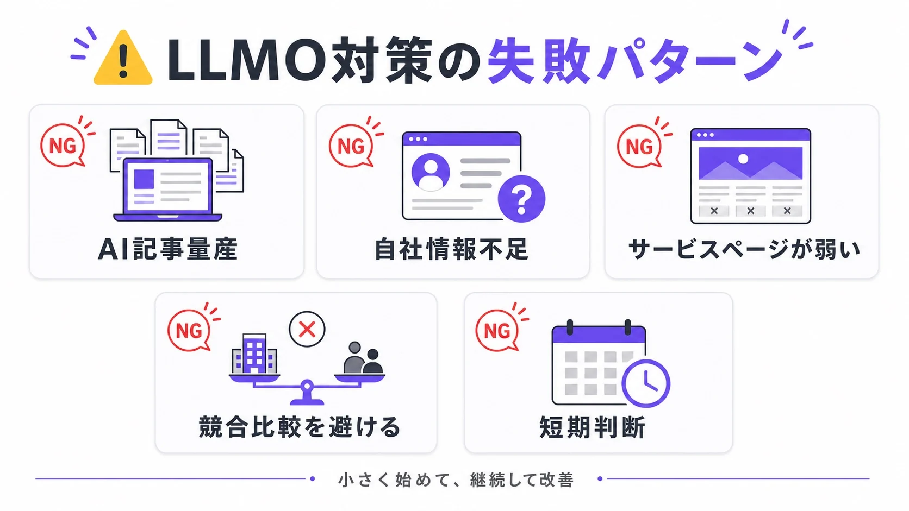

中小企業こそLLMO対策を始めるべき理由4選！AI検索で選ばれる会社になる方法

中小企業のLLMO対策で最初にやることは、難しいAI技術ではありません。記事を増やす前に、会社概要・サービスページ・実績・料金・FAQを整えることです。
見込み客は、Google検索だけでなくChatGPT、Gemini、Claude、PerplexityなどのAIにも質問し、候補企業を比べ始めています。このとき自社情報がAIに伝わっていなければ、比較候補に入る前に外れてしまう可能性があります。
本記事では、中小企業がLLMO対策を始めるべき理由、SEOとの違い、整えるべき情報、作るべき記事、実際の進め方をわかりやすく解説します。
LLMO対策会社を探している方は、中小企業におすすめのLLMO対策会社7選も参考にしてください。低予算で始める場合の費用目安と会社選びのポイントを比較できます。
先に結論
- 中小企業のLLMO対策は、AIに会社の特徴やサービスを正しく理解してもらうための情報整理です。
- 最初にやることは記事の量産ではなく、会社概要、サービスページ、実績、料金、FAQを具体的にすることです。
- SEOを捨てる必要はありません。SEOの土台に、AIが答えやすい質問設計と事例・FAQを足すのが現実的です。
目次
中小企業にLLMO対策が必要になっている理由
中小企業にLLMO対策が必要な理由は、検索行動そのものが変わっているからです。これまでは、ユーザーがGoogleでキーワード検索し、検索結果の上位記事を開き、複数のサイトを見ながら比較する流れが一般的でした。
しかし現在は、AIに質問して一度に答えを得る動きが広がっています。特に、比較・選定・相場・手順のような情報は、AIとの相性がよい領域です。中小企業のWeb集客も、「検索順位で上位を取る」だけでなく、「AIが回答を作るときに候補として扱われる」ことを意識する必要があります。
見込み客の情報収集がAIに移り始めている
見込み客は、すでに検索エンジンだけで情報収集しているわけではありません。ChatGPTやGeminiなどに「おすすめの会社」「選び方」「費用相場」「比較ポイント」を聞き、最初の候補をAIに出してもらう人が増えています。
実際に、総務省の令和7年版情報通信白書では、日本の個人の生成AI利用経験は2023年度の9.1%から2024年度は26.7%へ増えています。またGartnerは2024年2月の発表で、生成AIチャットボットなどの影響により、従来型の検索エンジン利用量は2026年までに25%減る可能性があると予測していました。
参考：Gartner｜Search engine volume will drop 25% by 2026
中小企業向けのサービスでも、この変化は無視できません。たとえば、BtoBサービスを探している担当者が「大阪で中小企業に強いWebマーケティング会社を教えて」とAIに聞いたとします。その回答に自社名が出ていれば、検討候補に入る可能性があります。反対に、競合だけが紹介され、自社が出てこなければ、その時点で機会損失になります。
従来のSEOでは、ユーザーが検索結果を開いてくれることが前提でした。しかしAI検索では、ユーザーがサイトを開く前に、AIの回答内で候補が絞られます。つまり、クリックされる前の段階で勝負が始まっています。
Pew Research Centerの2025年米国調査では、Google検索でAI要約が表示された場合、通常の検索結果リンクがクリックされた割合は8%でした。AI要約が出ていない検索では15%だったため、AI要約が出るだけで、サイトを開く前に情報収集が終わる動きが強まると考えられます。
参考：Pew Research Center｜Google users are less likely to click on links when an AI summary appears

中小企業にとって重要なのは、AIに聞かれたときに「どの会社か」「何に強いのか」「どの地域・業種に対応しているのか」が伝わる状態を作ることです。これは広告費の大きさよりも、情報の出し方と蓄積量が影響する領域です。
AI回答に出ない会社は比較候補から外れやすい
AI検索では、ユーザーが複数のサイトを細かく見比べる前に、AIが候補を提示します。そこで名前が出ない会社は、そもそも比較の土俵に上がれない可能性があります。
もちろん、AIに表示されたからといって必ず問い合わせが来るわけではありません。AIの回答は常に変動しますし、表示された情報がそのまま購買につながるとも限りません。しかし、検討初期の接点としてAIが使われる以上、回答内での言及は無視できない指標になります。
Pew Research Centerの同調査では、AI要約内の情報源リンクをクリックした割合も1%にとどまっています。つまり、AI回答に名前やページが出てもクリックされるとは限りません。ただ、出なければ検討前の入口にすら入りにくい、という見方ができます。
特に中小企業の場合、ブランド名を直接検索される機会は大企業ほど多くありません。だからこそ、「地域名×業種」「業種×課題」「費用×サービス」「おすすめ×比較」のような非指名の質問で見つけてもらう必要があります。
たとえば、まだ自社名を知らない見込み客が「中小企業向けのLLMO対策会社を選ぶポイントは？」と聞いたとき、自社の記事が参考情報として使われれば、認知の入口になります。さらに「中小企業に強いLLMO会社」として社名が挙がれば、問い合わせ前の信頼形成にもつながります。
LLMO対策は、単にAIに名前を出すための施策ではありません。見込み客が比較を始める前の段階で、自社が選択肢として認識される状態を作る施策です。
中小企業は未整備だからこそ早く差をつけやすい
LLMO対策は新しい領域のため、まだ取り組んでいない企業も多くあります。ここには中小企業にとってのチャンスがあります。
企業規模だけで有利不利は決まりません。大企業には予算や人員があります。一方で、生成AIを前提にした情報設計はまだ新しく、会社概要、サービスページ、FAQ、実績をAI向けに整理できていない会社も多いのが現実です。
中小企業は、代表や担当者が必要だと判断すれば、会社概要の修正、サービスページの改善、FAQの追加、記事制作を進めやすい場合があります。大切なのは、会社の規模ではなく、AIにも人にも伝わる情報を早く整えることです。
特に「地域×業種×課題」のようなニッチな領域では、大手がまだ細かく対策していないケースもあります。たとえば「大阪の中小企業向けLLMO対策」「製造業のAI検索対策」「士業事務所のAI集客」のようなテーマは、中小企業でもポジションを作りやすい領域です。
AIに覚えられるには、単に記事数を増やすだけでは足りません。自社がどの領域に強いのかを一貫して発信する必要があります。中小企業はテーマを絞りやすいため、早めに情報を整えれば、AI検索時代の入口を取りやすくなります。
広告費をかけ続けられない会社ほど資産型の集客が必要になる
中小企業にとって、広告は有効な集客手段です。しかし、広告は費用を止めると流入も止まります。予算が限られている会社ほど、広告だけに依存するのはリスクがあります。
LLMO対策で整える会社情報、実績ページ、比較記事、FAQ、事例記事は、長期的な営業資産になります。一度作って終わりではなく、更新しながら蓄積していくことで、検索エンジンにもAIにも理解されやすい情報基盤になります。
特に営業が苦手な会社、紹介に頼っている会社、代表者がすべての商談を担当している会社ほど、Web上に「代わりに説明してくれる情報」を置く価値があります。AIが見込み客に自社の特徴を説明してくれる状態を作れれば、営業前の理解度を高められます。
たとえば、サービスページに対象者、料金、支援範囲、成果の考え方、向いている会社・向いていない会社を明記しておくと、問い合わせ前のミスマッチを減らせます。さらにFAQや事例記事が充実していれば、AIが回答を作るときの材料にもなります。
中小企業のLLMO対策は、広告の代わりに一発で成果を出す施策ではありません。広告、SEO、SNS、紹介営業を補完しながら、長期的に効く情報資産を作る施策です。
LLMOとは何か
LLMOは、Large Language Model Optimizationの略で、大規模言語モデルに向けた最適化を意味します。日本語では「AI検索最適化」「生成AI最適化」と近い意味で使われることもあります。
ただし、言葉だけを見ると難しく感じるかもしれません。中小企業の実務に落とし込むなら、LLMOとは「AIに自社の情報を正しく理解してもらい、回答内で引用・推薦されやすくするための情報設計」と考えるとわかりやすいです。
LLMOはAIに自社情報を正しく理解してもらうための情報設計
LLMO対策の中心は、AIに読み取られやすい情報をWeb上に用意することです。特別な裏技を使ってAIに無理やり表示させることではありません。
AIは、ユーザーから質問を受けると、学習済みの知識や検索結果、参照可能な情報をもとに回答を作ります。そのとき、自社の情報が少なかったり、内容が曖昧だったり、複数の媒体で表記がバラバラだったりすると、AIは会社の特徴を正しく理解しにくくなります。
たとえば、サービスページに「Webマーケティング支援」とだけ書かれていても、何を支援しているのかがわかりません。SEOなのか、広告運用なのか、SNSなのか、LLMOなのか、BtoB向けなのか、個人向けなのかが不明です。この状態では、AIもユーザーも判断しにくくなります。
一方で、「中小企業向けに、AI検索で引用されやすい記事設計・サービスページ改善・FAQ整備を支援するLLMO対策サービス」と書かれていれば、対象者と提供内容が明確になります。AIはこのような具体的な情報をもとに、関連する質問への回答で取り上げやすくなります。
LLMO対策は、AIのためだけに行うものではありません。AIに伝わる情報は、人間にも伝わりやすい情報です。自社の強み、対象者、実績、料金、支援範囲を明確にすることは、そのままWebサイトの成約率改善にもつながります。
LLMOで目指すのはAIの回答内に出ること
SEOの主な目的は、検索結果で上位表示され、サイトへのアクセスを増やすことです。一方、LLMOでは、AIの回答内で会社名、サービス名、記事内容、独自の見解などが使われることを目指します。
たとえば、ユーザーがAIに「中小企業がLLMO対策を始めるなら何からやるべき？」と聞いたとします。その回答の中で、自社の記事に書いた手順やチェックリストが反映されれば、間接的な露出になります。さらに「中小企業向けのLLMO支援を行う会社」として社名が挙がれば、より直接的な認知につながります。
LLMOでは、必ずしもクリックが発生するとは限りません。AIの回答だけでユーザーが満足することもあります。だからこそ、従来のアクセス数だけでは成果を測りきれません。
重要なのは、AI上でどう扱われているかです。自社名が出ているのか、競合だけが出ているのか、サービス内容が正しく説明されているのか、古い情報や間違った情報が表示されていないかを確認する必要があります。
中小企業にとって、AIの回答内に出ることは「新しい看板」を持つようなものです。検索結果の上位表示だけでなく、AIが候補を提案する場面で名前が出る状態を目指すことが、今後のWeb集客では重要になります。
LLMOはSEOの代替ではなく拡張である
LLMOが注目されると、「SEOはもう不要なのか」と考える人もいます。しかし、SEOが不要になるわけではありません。むしろ、SEOの基本ができていないサイトは、LLMOでも不利になりやすいです。
AIが参照しやすい情報を作るには、検索エンジンが理解しやすいページ構造が必要です。タイトル、見出し、本文、内部リンク、ページの表示速度、モバイル対応、重複コンテンツの回避など、基本的なSEOは引き続き重要です。
ただし、LLMOではSEOとは違う視点も必要になります。従来のSEOでは、特定のキーワードで上位表示することが中心でした。LLMOでは、ユーザーがAIに投げる質問を想定し、その質問に対して明確な答えを用意することが重要になります。
たとえば、SEOでは「LLMO 中小企業」というキーワードを狙って記事を書くことがあります。一方、LLMOでは「中小企業はLLMO対策をやるべきか」「何から始めればいいか」「費用はいくらか」「自社でできるのか」といった質問単位で情報を作ります。
つまり、SEOが検索エンジンにページを届けるための土台だとすれば、LLMOはAIに文脈ごと理解されるための拡張施策です。中小企業は、SEOを捨てるのではなく、SEOで整えたサイトにLLMOの視点を加えるべきです。
中小企業は「何の会社か」を明確にするだけで差がつく
中小企業のWebサイトでよくある問題は、何の会社なのかが一目でわかりにくいことです。「お客様に寄り添う」「最適なソリューションを提供」「課題解決を支援」といった表現はよく使われますが、それだけでは具体性が足りません。
AIも人間も、抽象的な表現だけでは会社の強みを判断できません。重要なのは、「誰に」「何を」「どのように」「どの地域で」「どの実績をもとに」提供しているのかを明確にすることです。
たとえば、次の2つを比べると違いがわかります。
お客様の課題に寄り添い、最適なWebマーケティング支援を提供します。
大阪の中小企業向けに、SEO記事制作、LLMO対策記事、サービスページ改善を支援しています。Webライター事業で培った構成設計・検索意図分析をもとに、問い合わせにつながるコンテンツ設計を行います。
後者のほうが、対象者、地域、サービス内容、強みが明確です。このような情報は、AIが会社を理解する材料になります。
中小企業のLLMO対策では、最初から難しい技術に取り組む必要はありません。まずは、自社が何の会社なのかを明確にし、サイト全体で一貫して伝えることが第一歩です。
SEOとLLMOの違い
SEOとLLMOは似ている部分もありますが、目的や考え方には違いがあります。中小企業がLLMO対策を進めるなら、この違いを理解しておくことが大切です。
SEOは、検索結果で上位表示されることを主な目的とします。LLMOは、AIの回答内で引用・推薦・言及されることを目的とします。どちらもWeb上の情報を整える施策ですが、見るべき指標と作るべき情報が少し異なります。
SEOは検索順位、LLMOは回答内での扱われ方を見る
SEOでは、特定のキーワードで何位に表示されているかを確認します。検索順位が上がれば、クリック数や流入数の増加が期待できます。
一方、LLMOでは「AIの回答内でどう扱われているか」を見ます。自社名が出るかどうかだけでなく、どのような文脈で紹介されているか、サービス内容が正しいか、競合と比べてどの位置づけになっているかを確認します。
たとえば、AIに「中小企業向けのLLMO対策会社を教えて」と聞いたとき、自社が出ているかを確認します。出ている場合も、「格安で依頼できる会社」として扱われているのか、「BtoBに強い会社」として扱われているのか、「SEO記事制作に強い会社」として扱われているのかで意味が変わります。
LLMOでは、単なる露出よりも文脈が重要です。自社が狙いたいポジションで認識されているかを見なければなりません。
SEOはキーワード単位、LLMOは質問単位で考える
SEOでは、「中小企業 LLMO」「LLMO 対策」「AI検索 最適化」など、検索キーワードを軸に記事を設計します。もちろん、この考え方は今後も必要です。
ただし、AI検索ではユーザーが会話形式で質問します。キーワードだけでなく、「中小企業がLLMO対策を始めるなら何からやるべき？」「SEO会社にLLMO対策を頼んでも大丈夫？」「LLMO対策の費用はどれくらい？」のような質問が増えます。
質問型の検索は、AI要約とも相性が強い傾向があります。Pew Research Centerの米国調査では、「who」「what」「when」「why」などで始まる検索の60%、10語以上の長い検索の53%でAI要約が表示されていました。日本語でも同じ数字になるとは限りませんが、「短い単語」より「具体的な質問」に備える重要性は高まっています。
参考：Pew Research Center｜Google users are less likely to click on links when an AI summary appears
そのため、記事制作でも質問単位の設計が重要になります。見出しは検索キーワードを含めながらも、本文ではユーザーの疑問に直接答える必要があります。
特に中小企業向けの記事では、難しい概念説明だけでは不十分です。読者は「結局、自社は何をすればいいのか」を知りたいからです。LLMO向けの記事では、答え、理由、具体例、手順、注意点をセットで書くことが大切です。
SEOはページ単体、LLMOは会社全体の文脈も重要になる
SEOでもサイト全体の評価は重要ですが、実務では個別記事の順位に目が向きがちです。狙ったキーワードで記事が上がるかどうかが、成果判断の中心になりやすいからです。
LLMOでは、個別ページだけでなく、会社全体の文脈がより重要になります。AIは、会社概要、サービスページ、実績、代表者プロフィール、外部掲載、SNS、口コミ、プレスリリースなど、複数の情報をもとに会社を理解します。
たとえば、ある記事で「中小企業向けLLMO対策に強い」と書いていても、会社概要やサービスページにその情報がなければ、AIにとっては一貫性が弱くなります。逆に、サイト全体で同じテーマが繰り返し明確に出ていれば、AIはその会社の専門領域を理解しやすくなります。
中小企業は、ページごとにバラバラな発信をするのではなく、自社のポジションを決めたうえで、サイト全体に一貫した情報を置く必要があります。
SEOとLLMOの違いを比較表で理解する
SEOとLLMOの違いは、次のように考えるとわかりやすくなります。

| 項目 | SEO | LLMO |
|---|---|---|
| 主な目的 | 検索結果で上位表示されること | AI回答内で引用・推薦・言及されること |
| 主な対象 | Google検索、Bing検索など | ChatGPT、Gemini、Claude、Perplexityなど |
| 設計単位 | キーワード | 質問、文脈、比較軸 |
| 重要な情報 | タイトル、見出し、本文、内部リンク、被リンク | 会社情報、実績、料金、FAQ、比較情報、外部言及 |
| 成果指標 | 検索順位、クリック数、流入数 | AIでの表示、回答内の文脈、ブランド言及、問い合わせ貢献 |
| 向いている施策 | 記事SEO、内部対策、コンテンツ改善 | 比較記事、選び方記事、FAQ、事例、外部発信 |
SEOとLLMOは対立するものではありません。SEOで検索エンジンに評価される土台を作り、LLMOでAIに理解されやすい文脈を補強する。この組み合わせが、中小企業にとって現実的な進め方です。
中小企業がLLMOで狙うべきAI質問パターン
LLMO対策では、どの質問でAIに表示されたいのかを決めることが重要です。なんとなく記事を増やしても、問い合わせにつながる質問に届かなければ成果は出にくくなります。
中小企業が狙うべきなのは、大企業が取りにくいニッチな質問です。地域、業種、課題、費用、比較、手順を組み合わせることで、自社に合った質問パターンを作れます。

地域名×業種の質問
地域密着型の中小企業は、「地域名×業種」の質問と相性がよいです。
- 大阪でおすすめのLLMO対策会社は？
- 関西で中小企業に強いWebマーケティング会社は？
- 名古屋で製造業に強いホームページ制作会社は？
- 福岡でBtoB企業向けのSEO会社を探すなら？
このような質問は、見込み客の検討意欲が高い傾向があります。地域が入っているため、対象エリアが合えば問い合わせにつながりやすいからです。
中小企業は、全国規模のビッグキーワードを狙うよりも、まず自社の商圏に近い質問を狙うほうが現実的です。地域名を含めたサービスページや記事を作り、所在地、対応エリア、地域での実績を明記することで、AIにも認識されやすくなります。
地域名を使うときは、単に地名を入れるだけでは不十分です。「大阪対応」と書くだけでなく、大阪のどのような企業に向いているのか、対面対応の有無、オンライン対応の範囲、地域の業種傾向なども入れると情報の厚みが出ます。
業種×課題の質問
中小企業がLLMOで狙いやすいもう一つの軸が、「業種×課題」です。
- 製造業がWebから問い合わせを増やすには？
- 士業事務所がAI検索で選ばれるには？
- 工務店が地域で見つけられるWebサイトを作るには？
- BtoB企業が比較検討で選ばれるコンテンツとは？
このような質問は、単なる一般論ではなく、業種ごとの事情を踏まえた回答が求められます。中小企業が特定業種の支援経験を持っている場合、その経験を記事に反映することで差別化できます。
たとえば、製造業向けなら、専門用語が多くサービス内容が伝わりにくい、写真や設備情報が不足しがち、導入事例を出しにくい、商談化までの期間が長いといった課題があります。士業向けなら、信頼性、実績、料金、相談しやすさ、専門分野の明確化が重要になります。
AIは具体的な業種課題が書かれたページを回答の材料にしやすくなります。自社の得意業種があるなら、業種別の記事は優先度が高いです。
比較・おすすめの質問
AI検索では、比較・おすすめ系の質問が多く使われます。ユーザーは自分で何十社も調べるのではなく、AIに候補を出してもらい、その中から詳しく調べる動きを取りやすいからです。
Gartnerの米国消費者調査でも、AI要約によって31%の消費者がより多くの商品候補を検討すると回答しています。比較・おすすめの質問でAIが候補を広げるなら、企業側も「比較される前提」の情報を用意しておく必要があります。
参考：Gartner｜Marketers must optimize for both AI-driven and traditional search
- 中小企業向けのLLMO対策会社おすすめは？
- SEO会社とLLMO会社はどちらに相談すべき？
- AI検索対策に強い会社の選び方は？
- 格安で相談できるLLMO対策会社は？
このような質問に対して、自社が候補に出る状態を目指すには、比較記事や選び方記事が必要です。ただし、自社だけを一方的に持ち上げる記事は信頼されにくくなります。
比較記事では、料金、支援範囲、得意領域、対象企業、契約形態、実績、サポート範囲など、読者が比較しやすい軸を用意することが重要です。そのうえで、自社がどのような会社に向いているのかを自然に示します。
中小企業が狙うなら、「大手向け」ではなく「中小企業向け」「低予算から始められる」「記事制作まで依頼できる」「地域密着」「BtoB特化」など、切り口を絞ると勝ちやすくなります。
費用・相場の質問
費用に関する質問は、問い合わせに近いテーマです。特に中小企業は、予算に不安を持っていることが多いため、料金感を事前に知りたいと考えます。
- LLMO対策の費用相場は？
- 中小企業がLLMO対策にかける予算はいくら？
- AI検索対策は月額いくらから始められる？
- SEO記事制作とLLMO記事制作の料金差は？
費用記事では、単に金額を書くのではなく、何に費用がかかるのかを説明する必要があります。診断だけなのか、記事制作込みなのか、サービスページ改善まで含むのか、継続分析があるのかによって、料金は大きく変わります。
料金を明記できない場合でも、目安やプランの考え方を書くことはできます。「簡易診断」「記事制作」「戦略設計」「継続支援」のように分けて説明すれば、見込み客は自社に必要な範囲を判断しやすくなります。
AIにとっても、料金情報は会社やサービスを理解する重要な材料です。すべてを公開できなくても、最低限の目安を置くことで、比較・推薦の文脈に入りやすくなります。
やり方・手順の質問
LLMO対策は新しい領域のため、「何から始めればいいかわからない」という読者が多くいます。そのため、やり方や手順を解説する記事は重要です。
- 中小企業がLLMO対策を始める手順は？
- AIに引用される記事を作るには？
- 自社サイトをAI検索に対応させる方法は？
- ChatGPTに自社が出るか確認する方法は？
手順記事では、抽象論ではなく、実際に行動できる形にすることが大切です。「現状確認」「質問リスト作成」「既存ページ改善」「記事制作」「外部発信」「定点観測」のように、ステップを分けて説明します。
中小企業の読者は、専門用語の説明だけでは動けません。チェックリスト、テンプレート、具体例を入れることで、実務に使える記事になります。こうした情報は、AIが回答を作るときにも引用されやすくなります。
狙わないほうがいい質問も決める
LLMO対策では、狙う質問だけでなく、狙わない質問を決めることも重要です。中小企業がいきなり「LLMOとは」「SEOとは」のような大きなテーマだけで勝とうとすると、競合が強く、成果まで時間がかかります。
もちろん、用語解説記事は必要です。しかし、それだけでは問い合わせにつながりにくい場合があります。優先すべきなのは、自社のサービスに近く、読者の検討段階が進んでいる質問です。
たとえば、「LLMOとは」よりも「中小企業がLLMO対策を始める手順」「大阪でLLMO対策を相談できる会社」「LLMO対策の費用相場」のほうが、問い合わせにつながりやすい可能性があります。
中小企業のLLMO対策では、広く認知を取る記事と、問い合わせに近い記事を分けて考える必要があります。最初は後者を優先し、売上につながる質問から対策するのが現実的です。
中小企業がまず整えるべき情報
LLMO対策で最初にやるべきことは、新しい記事を大量に作ることではありません。まずは、自社サイトにある基本情報を整えることです。
AIは、会社の情報が少ないと正しく理解できません。サービス内容が曖昧、実績がない、料金が不明、代表者情報が薄い、FAQがない。この状態では、AIが比較や推薦の回答を作るときに扱いにくくなります。

会社概要を具体的に書く
会社概要は、AIが自社を理解するための基本情報です。会社名、所在地、代表者、設立年、事業内容、対応エリアなどを明確に書きます。
中小企業の会社概要でよくあるのは、事業内容が抽象的すぎるケースです。「Webマーケティング支援」「コンサルティング業務」「コンテンツ制作」だけでは、何をしている会社なのかが伝わりません。
LLMOを意識するなら、次のように具体化します。
株式会社〇〇は、大阪を拠点に中小企業向けのLLMO対策、SEO記事制作、サービスページ改善を支援するWebマーケティング会社です。AI検索で引用されやすい記事構成、FAQ設計、比較記事制作を通じて、問い合わせにつながる情報設計を行います。
このように書くと、地域、対象者、サービス内容、強みが明確になります。AIにも人間にも伝わりやすい会社概要になります。
会社概要は、単なる形式的なページではありません。LLMO対策では、自社のポジションを示す重要なページです。
サービスページを具体的にする
サービスページは、LLMO対策で最も重要なページの一つです。AIが「この会社は何を提供しているのか」を理解するための中心になります。
サービスページには、少なくとも次の情報を入れるべきです。
| 項目 | 書くべき内容 |
|---|---|
| 対象者 | どのような会社・担当者向けのサービスか |
| 提供内容 | 具体的に何を行うのか |
| 納品物 | 診断レポート、記事、構成案、改善提案など |
| 進め方 | 問い合わせから納品までの流れ |
| 料金 | 目安、プラン、見積もり条件 |
| 期間 | 初回診断、記事制作、継続支援の目安 |
| 実績 | 対応業種、過去の成果、事例 |
| FAQ | よくある不安への回答 |
「詳細はお問い合わせください」だけでは、AIも見込み客も判断できません。すべてを細かく公開する必要はありませんが、比較に必要な情報はできるだけ出すべきです。
特に中小企業向けサービスでは、料金と対応範囲が重要です。費用感がまったくわからないサービスは、問い合わせ前に候補から外されやすくなります。LLMO対策でも、料金の目安があるほうがAIに説明されやすくなります。
代表者・担当者の専門性を出す
中小企業では、会社そのものよりも代表者や担当者の専門性が強みになることがあります。大企業のようにブランド力がない分、「誰が提供しているのか」が信頼材料になります。
代表者プロフィールには、経歴、実績、得意領域、過去の支援内容、発信しているテーマなどを書きます。顔写真の有無は会社の方針によりますが、少なくとも文章で専門性を伝えることは必要です。
たとえば、LLMO対策を提供する会社であれば、SEO記事制作の経験、Webメディア運営の経験、コンテンツ設計の実績、AIツールの活用経験、対応してきた業種などを書くとよいでしょう。
AIは、会社情報だけでなく、人物情報も理解材料にします。代表者がどの領域に詳しいのか、どのような実績を持っているのかがWeb上に出ていれば、専門性の文脈で扱われやすくなります。
中小企業のLLMO対策では、無理に大きく見せる必要はありません。むしろ、代表者や担当者の具体的な経験を出したほうが、信頼されやすくなります。
実績・事例を掲載する
実績や事例は、AIにもユーザーにも重要な信頼材料です。どのような会社を支援し、どのような課題に対応し、どのような成果が出たのかを示すことで、自社の強みが具体化します。
取引先名を公開できる場合は、会社名やロゴを掲載すると信頼性が高まります。公開できない場合でも、匿名事例として書くことはできます。
- 大阪の製造業向けに、サービスページとFAQを改善
- 士業事務所向けに、地域名を含む記事群を制作
- BtoB企業向けに、比較記事と費用相場記事を作成
- 問い合わせ前の質問をもとにFAQを追加
事例では、業種、課題、実施内容、成果、担当範囲をセットで書きます。数字がある場合は、できるだけ具体的に入れます。ただし、数字を盛る必要はありません。問い合わせ数、検索順位、記事本数、改善したページ数、制作期間など、出せる範囲の事実で十分です。
LLMO対策で重要なのは、AIが「この会社は何に強いのか」を判断できる材料を増やすことです。実績ページは、その材料として非常に有効です。
料金・対応範囲を明確にする
中小企業の見込み客は、費用に敏感です。どれだけ魅力的なサービスでも、料金がまったくわからなければ問い合わせをためらいます。
LLMO対策でも、料金情報は重要です。AIに「中小企業向けのLLMO対策の費用は？」と聞かれたとき、料金情報がある会社は回答内で説明されやすくなります。逆に、料金が一切ない会社は、比較しにくい存在になります。
料金を出すときは、固定価格だけでなく、プランや目安でも問題ありません。
- LLMO簡易診断：3万円〜
- LLMO記事構成案作成：1本2万円〜
- LLMO記事制作：1本5万円〜
- サービスページ改善提案：5万円〜
- 月額支援：5万円〜
もちろん、実際の価格はサービス内容によって変わります。その場合は、「記事本数、分析範囲、対応ページ数、打ち合わせ有無によって変動します」と書けば問題ありません。
重要なのは、見込み客が問い合わせ前に予算感をつかめることです。価格を完全に隠すよりも、最低料金や目安を出したほうが、信頼されやすくなります。
FAQを充実させる
FAQは、LLMO対策と非常に相性がよいコンテンツです。AI検索では、ユーザーが質問形式で情報を探すため、FAQはそのまま回答の材料になりやすいからです。
中小企業のサービスページには、次のようなFAQを入れるとよいでしょう。
- LLMO対策は中小企業にも必要ですか？
- SEO対策をしていればLLMO対策は不要ですか？
- どれくらいの期間で効果が出ますか？
- 自社でできることはありますか？
- 記事制作だけ依頼できますか？
- 料金はいくらからですか？
- 対応できる業種はありますか？
- 成果はどのように確認しますか？
FAQでは、短く答えるだけでなく、読者が納得できる理由も書きます。特に費用、期間、成果、対応範囲に関する質問は、問い合わせ前の不安を減らす役割があります。
AIにとっても、FAQは会社のサービス内容を理解する手がかりになります。サービスページの下部にFAQを入れるだけでも、情報の明確さは大きく変わります。
問い合わせ前の不安に答える材料を増やす
LLMO対策では、どこにでもある一般論だけでは差別化しにくくなります。読者が本当に知りたいのは、「自社の場合はどう判断すればいいのか」です。
そのため、会社概要やサービスページには、問い合わせ前の不安に答える材料を増やします。たとえば、次のような情報です。
- 自社で実施したAI検索チェックの結果
- 問い合わせ時によく聞かれる質問
- 商談で多い不安や誤解
- 既存顧客の課題傾向
- 診断フォームの回答傾向
- 自社で作った比較表やチェックリスト
- 実際に改善したページのBefore/After
- AI回答に自社や競合がどう出たかの観察結果
大規模な調査レポートである必要はありません。日々の商談、問い合わせ、診断、制作現場で得た情報を言語化するだけでも、読者の判断材料になります。
重要なのは、読者が「この会社に相談したら何がわかるのか」を理解できることです。AIにとっても、具体的な事例や判断基準は他社との差分を理解する材料になります。
LLMO対策で作るべき記事・ページ
基本情報を整えたら、次はLLMO対策として必要な記事やページを作っていきます。中小企業が優先すべきなのは、見込み客の検討段階に合わせたコンテンツです。
すべての記事を一度に作る必要はありません。まずは、サービスページ、選び方記事、費用記事、比較記事、事例記事を優先します。そのうえで、業種別・地域別・用語解説を広げていくと、効率よく情報資産を作れます。
自社サービスの詳細ページ
最初に作るべきなのは、自社サービスの詳細ページです。どれだけ記事を増やしても、最終的な受け皿であるサービスページが弱ければ、問い合わせにつながりません。
LLMO対策のサービスページであれば、次のような構成が考えられます。
- LLMO対策とは何か
- このサービスで解決できる課題
- 対象となる会社
- 提供内容
- 納品物
- 料金
- 進め方
- 実績
- よくある質問
- 問い合わせ導線
サービスページでは、売り込みよりも「理解しやすさ」を優先します。読者は、いきなり申し込みたいわけではありません。まず、自社に必要なサービスなのか、予算に合うのか、何をしてもらえるのかを知りたいと考えています。
AIも同じです。サービスページに具体的な情報があるほど、その会社を説明しやすくなります。中小企業のLLMO対策では、ブログ記事より先にサービスページを整えることが重要です。
選び方記事
選び方記事は、検討中の読者に刺さりやすいコンテンツです。たとえば、「中小企業がLLMO対策会社を選ぶポイント」のような記事です。
選び方記事では、単に一般論を並べるのではなく、読者が失敗しないための判断基準を示します。
- SEOとLLMOの違いを説明できるか
- 中小企業向けの予算感を理解しているか
- 記事制作だけでなく情報設計まで見られるか
- AIでの表示状況を確認しているか
- 料金と納品物が明確か
- 自社に合わない施策も説明してくれるか
このような選び方を提示すると、読者は業者を比較しやすくなります。同時に、自社がその条件を満たしていることを自然に伝えられます。
選び方記事は、AIにも使われやすいコンテンツです。AIは「どう選べばいいか」と聞かれたとき、判断基準が明確な記事を参考にしやすくなります。
比較記事
比較記事は、LLMO対策で重要な役割を持ちます。AIは、ユーザーから「おすすめ」「比較」「違い」を聞かれることが多いため、比較情報があるページを参照しやすくなります。
中小企業が作る比較記事には、次のようなテーマがあります。
- LLMO対策会社おすすめ10選
- 中小企業向けLLMO対策会社の比較
- SEO会社とLLMO会社の違い
- LLMO記事制作会社の選び方
- 格安で相談できるLLMO対策会社
比較記事で重要なのは、比較軸を明確にすることです。会社名を並べるだけでは、読者の判断材料になりません。料金、支援範囲、得意領域、対応業種、契約形態、実績、サポート体制などを表で見せるとわかりやすくなります。
自社を掲載する場合も、過剰に持ち上げる必要はありません。むしろ、「このような会社に向いている」「このような場合は別の選択肢がよい」と書いたほうが信頼されます。
AIに引用される比較記事を作るには、客観的な比較軸と独自の評価コメントの両方が必要です。単なる一覧ではなく、選定理由まで書くことが大切です。
費用相場記事
費用相場記事は、問い合わせ前の不安を減らすコンテンツです。中小企業の読者は、「高すぎないか」「自社でも依頼できるか」「どこまで含まれるのか」を気にしています。
LLMO対策の費用相場記事では、次のような内容を入れるとよいでしょう。
- LLMO対策の費用は何で決まるか
- 診断のみの費用目安
- 記事制作込みの費用目安
- サービスページ改善込みの費用目安
- 月額支援の費用目安
- 安いプランと高いプランの違い
- 中小企業が最初に選ぶべきプラン
費用記事では、ただ安さを訴求するのではなく、価格差の理由を説明することが重要です。たとえば、同じ記事制作でも、キーワード調査だけなのか、AI質問設計まで含むのか、競合分析をするのか、構成案を作るのかで価値は変わります。
費用相場記事では、自社の過去案件や相談内容をもとに「中小企業では月額〇万円以内から始めたい相談が多い」「最初は診断と数本の記事制作から始めるケースが多い」のような現場感を入れるとよいです。
業種別記事
業種別記事は、自社の得意領域をAIに理解してもらうために有効です。中小企業のLLMO対策では、業種を絞るほど具体的な情報を書きやすくなります。
- 製造業のLLMO対策
- 士業事務所のAI検索対策
- 工務店のWeb集客とLLMO
- BtoB企業がAI検索で選ばれる方法
- 採用支援会社のLLMO対策
業種別記事では、その業界特有の課題を書くことが重要です。どの業種にも当てはまる一般論だけでは、差別化できません。
たとえば製造業なら、技術力が伝わりにくい、製品名が専門的で検索されにくい、設備情報が古い、事例を出しにくいといった課題があります。士業なら、専門性の見せ方、料金の不安、相談前の心理的ハードル、地域での信頼性が課題になります。
こうした業種ごとの現場感を入れることで、AIにも「この会社は特定業種の課題を理解している」と伝わりやすくなります。
地域別記事
地域別記事は、地域密着型の中小企業に向いています。対応エリアが決まっている会社や、地域名で検索されるサービスでは特に有効です。
- 大阪でおすすめのLLMO対策会社
- 関西の中小企業がLLMO対策を始める方法
- 大阪のBtoB企業がAI検索で選ばれるには
- 地域密着企業のAI検索対策
地域別記事では、地名を入れるだけでは不十分です。地域の商圏、業種傾向、相談ニーズ、対面対応の有無、地域企業の課題などを入れると、記事の意味が出ます。
中小企業の場合、全国対応を掲げるよりも、まずは地域で選ばれる状態を作るほうが成果につながりやすいことがあります。AIに「大阪で相談できる会社」として認識されれば、地域名を含む質問で候補に入りやすくなります。
地域別記事は、ローカルSEOとLLMOの両方に効く可能性があります。Googleビジネスプロフィール、地域メディア、プレスリリース、SNS発信とも組み合わせると、外部からの文脈も作りやすくなります。
事例記事
事例記事は、LLMO対策において特に価値の高いコンテンツです。なぜなら、実際の課題、施策、結果が書かれているため、その会社にしか書けない判断材料になるからです。
事例記事では、次の流れで書くとわかりやすくなります。
- 顧客の業種
- 相談前の課題
- 実施した施策
- 制作
- 改善したページ
- 成果や変化
- 担当者の所感
- 同じ課題を持つ会社へのアドバイス
取引先名を出せない場合でも、匿名で書けます。「大阪のBtoBサービス企業」「関西の製造業」「従業員20名規模の士業事務所」のように、個人情報や機密情報に配慮しながら具体性を出すことは可能です。
事例記事に強い会社は、LLMOでも有利です。AIが会社を説明するとき、「この会社はどのような支援をしてきたのか」を判断しやすくなるからです。
用語解説・FAQ記事
用語解説やFAQ記事は、認知獲得と内部リンクの起点になります。LLMO、AIO、GEO、AEO、AI Overviews、生成AI検索など、新しい用語に不安を持つ読者は多くいます。
ただし、用語解説記事だけを大量に作っても、問い合わせにはつながりにくい場合があります。用語解説は、サービスページや比較記事、費用記事、事例記事へ誘導する役割として考えるとよいです。
- LLMOとは？
- AIOとLLMOの違い
- GEOとは？
- AI検索対策とは？
- AIに引用される記事とは？
- SEOとLLMOは何が違う？
用語解説では、初心者にもわかる言葉で説明します。難しい専門用語を並べるよりも、「中小企業が何をすればいいか」まで落とし込むことが重要です。
LLMO対策では、入口記事と成約記事を分けて設計します。用語解説で認知を取り、選び方記事やサービスページで問い合わせにつなげる流れを作ることが大切です。
中小企業がLLMO対策を進める手順
LLMO対策は、やみくもに記事を増やしても成果につながりません。限られた予算と人員で進めるには、優先順位を決める必要があります。
中小企業の場合、まずは現状確認から始め、既存ページの改善、質問リストの作成、記事制作、外部発信、定点観測の順番で進めるのが現実的です。

手順1：AIで自社名・サービス名を検索する
最初に行うべきことは、AIで自社がどう表示されるか確認することです。ChatGPT、Gemini、Claude、Perplexityなどに、自社名やサービス名を入れて質問します。
確認する質問の例は次のとおりです。
- 株式会社〇〇はどんな会社？
- 〇〇のサービス内容を教えて
- 〇〇はLLMO対策に強い？
- 大阪でLLMO対策を相談できる会社は？
- 中小企業向けのLLMO対策会社を教えて
このとき、自社が出るかどうかだけでなく、内容が正しいかを確認します。古い情報が出ていないか、別会社と混同されていないか、サービス内容がずれていないかを見ることが大切です。
AIに正しく認識されていない場合は、自社サイト上の情報が不足している可能性があります。会社概要、サービスページ、代表者情報、実績、FAQを見直すきっかけになります。
手順2：競合がAIにどう表示されているか確認する
次に、競合がAIにどう表示されているかを確認します。自社だけを見ても、どこに差があるのかはわかりません。
競合確認では、次の点を見ます。
- どの会社名がよく出るか
- どのような強みとして紹介されているか
- どのページが根拠になっていそうか
- 外部サイトで言及されているか
- 料金や実績が明確か
- 比較記事に掲載されているか
AIが競合を紹介している場合、その会社はWeb上に十分な情報を出している可能性があります。サービスページが詳しい、実績が多い、比較記事で言及されている、SNSやメディアで発信しているなど、何らかの理由があります。
競合調査では、単に真似をするのではなく、自社が勝てる切り口を探します。大手が強いなら、地域、中小企業向け、低予算、特定業種、記事制作特化など、別の軸でポジションを作ることが重要です。
手順3：狙う質問リストを作る
LLMO対策では、狙う質問を先に決める必要があります。記事テーマを思いつきで決めると、問い合わせに遠いコンテンツばかり増えることがあります。
質問リストは、次のカテゴリで作ると抜け漏れを減らせます。
| カテゴリ | 質問例 |
|---|---|
| 地域 | 大阪でLLMO対策を相談できる会社は？ |
| 業種 | 製造業がAI検索で選ばれるには？ |
| 課題 | 問い合わせを増やすには何を改善すべき？ |
| 比較 | SEO対策とLLMO対策の違いは？ |
| 費用 | LLMO対策の費用相場はいくら？ |
| 手順 | 中小企業は何から始めるべき？ |
| 会社選び | LLMO対策会社を選ぶポイントは？ |
最初は20〜50個ほど質問を出します。その中から、売上に近いものを優先します。アクセス数が多そうな質問より、問い合わせにつながりやすい質問を優先することが大切です。
質問リストは、記事制作の設計図になります。どの質問にどのページで答えるのかを決めることで、サイト全体の情報設計がしやすくなります。
手順4：既存ページを修正する
質問リストを作ったら、いきなり新規記事を作る前に既存ページを修正します。会社概要、サービスページ、実績ページ、FAQページは、LLMO対策の土台になるからです。
既存ページでは、次の点を確認します。
- 何の会社か一文で伝わるか
- 対象者が明確か
- 提供内容が具体的か
- 料金や目安があるか
- 実績や事例があるか
- FAQがあるか
- 問い合わせ導線がわかりやすいか
- ページ同士が内部リンクでつながっているか
特にサービスページが薄い場合は、優先的に改善します。ブログ記事で集客できても、サービスページで不安が解消されなければ問い合わせにつながりません。
LLMO対策は、記事を増やすことではなく、AIと見込み客が理解しやすいサイトを作ることです。既存ページの改善は、最も費用対効果が高い施策になりやすいです。
手順5：LLMO向けの記事を作る
既存ページを整えたら、狙う質問に合わせて記事を作ります。最初に作るべきなのは、問い合わせに近いテーマです。
優先度が高い記事は次のとおりです。
- 中小企業がLLMO対策を始める手順
- LLMO対策の費用相場
- LLMO対策会社の選び方
- 中小企業向けLLMO対策会社の比較
- 業種別のLLMO対策
- 地域別のLLMO対策
記事では、見出しごとに読者の疑問へ直接答えます。結論、理由、具体例、注意点を入れると読みやすくなります。表やチェックリストも積極的に使います。
AIに引用されやすい記事を作るには、曖昧な文章を避けることが重要です。「場合によって異なります」だけで終わらせず、「中小企業の場合は、まず〇〇から始めるのが現実的です」のように判断基準を示します。
手順6：外部発信を増やす
LLMO対策では、自社サイトだけでなく、外部での言及も重要です。AIは複数の情報源から会社を理解するため、自社サイト以外にも情報があるほうが文脈を作りやすくなります。
外部発信の例は次のとおりです。
- noteで代表者の考えを発信する
- プレスリリースを出す
- 業界メディアに寄稿する
- SNSで専門テーマを継続発信する
- 比較サイトやポータルサイトに掲載する
- 登壇資料やホワイトペーパーを公開する
中小企業の場合、特に代表者発信は有効です。会社としてのブランドがまだ弱くても、代表者の専門性や考え方が伝われば、信頼形成につながります。
ただし、外部発信もテーマを揃えることが大切です。自社サイトではLLMO、SNSではまったく別の話、noteでは雑多な日記だけという状態では、専門性が伝わりにくくなります。自社が取りたいポジションに合わせて、発信テーマを決めることが重要です。
手順7：定期的にAI表示を確認する
LLMO対策は、一度記事を作って終わりではありません。定期的にAIでの表示状況を確認し、改善を続ける必要があります。
確認する頻度は、月1回程度からで十分です。同じ質問を同じAIに投げ、自社や競合がどう表示されるかを記録します。
確認項目は次のとおりです。
- 自社名が出るか
- 競合名が出るか
- 自社の説明は正しいか
- 狙いたい文脈で紹介されているか
- 古い情報が出ていないか
- 新しく作った記事の内容が反映されているか
AIの回答は毎回完全に同じではありません。そのため、1回の結果だけで判断しないことが大切です。複数回確認し、傾向を見るようにします。
LLMO対策の成果は、検索順位のように単純な数字で見えにくい部分があります。だからこそ、質問リストと表示記録を残し、改善サイクルを回すことが重要です。
中小企業のLLMO対策で失敗しやすいポイント
LLMO対策は新しい領域のため、間違った方向に進むと時間と費用を無駄にします。特に中小企業は予算と人員が限られているため、最初の進め方が重要です。
ここでは、中小企業がLLMO対策で失敗しやすいポイントを解説します。

AI向けの裏技だけを探してしまう
LLMO対策でよくある失敗が、AI向けの裏技だけを探してしまうことです。特別なタグ、特殊なファイル、AIに見つけてもらうための小手先の施策だけに注目すると、本質を外しやすくなります。
もちろん、技術的な整備が不要という意味ではありません。サイトが検索エンジンにクロールされること、ページ構造がわかりやすいこと、不要なブロックがないことは重要です。
しかし、中小企業が最初にやるべきことは、裏技ではありません。会社情報、サービス内容、実績、料金、FAQ、比較情報を整えることです。AIに見つけてもらう以前に、見つかったときに理解される情報が必要です。
LLMO対策の本質は、AIにも人間にもわかりやすい情報をWeb上に置くことです。小手先の技術より、情報の明確さと一貫性を優先すべきです。
生成AIで記事を量産してしまう
生成AIを使えば、記事を大量に作ることは簡単です。しかし、AIで作った一般論の記事をそのまま量産しても、LLMO対策として強いコンテンツにはなりにくいです。
理由はシンプルです。どこにでもある内容は、AIにとっても差分が少ないからです。読者にとっても、「結局、何をすればいいのか」がわからない記事では価値がありません。
Googleも、生成AIを使ったかどうか自体ではなく、読者に役立つ高品質なコンテンツかどうかを重視する考え方を示しています。AIで作った一般論をそのまま並べるだけでは、検索にもAI回答にも強い材料になりにくいと考えるべきです。
参考：Google Search Central｜Google Search's guidance on using generative AI content on your website
LLMO向けの記事では、生成AIを使うこと自体が悪いわけではありません。構成案の作成、質問リストの整理、文章のたたき台作成には有効です。ただし、最終的には自社の知見、事例、判断基準、現場で聞かれる質問への回答を入れる必要があります。
特に中小企業の場合、現場の経験こそが差別化要素です。AIで文章を整えることはできても、商談で聞かれるリアルな不安、自社が対応できる範囲、過去の事例、業種ごとの課題は自社でしか出せません。
AIを使うなら、量産のためではなく、現場知見を読みやすくするために使うべきです。
自社の情報が少なすぎる
LLMO対策で最も多い問題の一つが、自社情報の不足です。記事を作る前に、自社サイトを見ても会社の強みが伝わらないケースがあります。
よくある状態は次のとおりです。
- 会社概要が短い
- サービス内容が抽象的
- 料金がない
- 実績がない
- 代表者プロフィールがない
- FAQがない
- 対応エリアがわからない
- 問い合わせ前の不安に答えていない
この状態で記事を増やしても、AIは会社の特徴を理解しにくくなります。見込み客も、問い合わせする理由を見つけにくくなります。
中小企業は、まず自社の情報を出すことに慣れる必要があります。大企業のような立派な実績でなくても構いません。対応業種、制作本数、支援内容、相談傾向、過去の改善例など、出せる情報は必ずあります。
情報を出さない会社は、AIにとって存在しないのと近い状態になります。LLMO対策では、まず「伝える材料」を増やすことが重要です。
記事だけ増やしてサービスページが弱い
ブログ記事を増やすことに集中しすぎて、サービスページが弱いままになるケースもあります。これはSEOでもLLMOでも大きな問題です。
記事は、見込み客との接点を作る役割があります。しかし、問い合わせにつなげるには、サービスページで不安を解消し、依頼する理由を伝える必要があります。
たとえば、「LLMO対策の費用相場」という記事でアクセスを集めても、自社サービスページに料金や支援内容がなければ、読者は離脱します。AIも、その会社のサービス内容を詳しく説明しにくくなります。
中小企業がLLMO対策を進めるなら、記事制作と同時にサービスページの改善を行うべきです。記事で疑問に答え、サービスページで具体的な依頼内容を示す。この導線が必要です。
競合比較を避けてしまう
中小企業は、競合比較を避けがちです。他社名を出したくない、自社が劣って見えるのが怖い、比較記事を作るのに抵抗がある。このような理由で、比較系コンテンツに踏み込まない会社もあります。
しかし、AI検索では比較の質問が多く使われます。ユーザーは「どの会社がよいか」「何が違うか」「自社に合うのはどこか」を知りたいからです。
比較を避けると、AIが回答を作るときに自社が候補に入りにくくなる可能性があります。自社に都合のよい情報だけでなく、選び方や比較軸を提示することが重要です。
比較記事では、必ずしも競合を批判する必要はありません。各社の特徴を整理し、自社が向いているケースを明確にすればよいです。むしろ、向いていないケースまで書いたほうが信頼されます。
成果を短期で判断しすぎる
LLMO対策は、短期間で必ず成果が出る施策ではありません。AIの回答は変動し、検索エンジンやAIサービスの仕様も変化します。
そのため、1本記事を出してすぐにAIに表示されないからといって、失敗と判断するのは早すぎます。期間を保証する数字はありませんが、実務ではまず3か月〜6か月ほどを一つの確認期間にして、ページ改善、記事追加、外部発信、AI表示確認を続けるのが現実的です。
短期で見るべき指標と、中長期で見るべき指標は分けて考えます。
短期
- 会社概要やサービスページを改善できたか
- FAQや実績を追加できたか
- 狙う質問リストを作れたか
- 記事を公開できたか
中期
- 狙った質問でAIに表示されるか
- 競合との扱われ方が変わったか
- 検索流入が増えたか
- 問い合わせ前の理解度が上がったか
長期
- 問い合わせ数に貢献しているか
- 商談の質が上がったか
- 指名検索やブランド言及が増えたか
LLMO対策は、一発勝負ではなく改善サイクルです。中小企業ほど、無理のない範囲で継続できる設計にすることが重要です。
中小企業がLLMO対策を外注したい場合
この記事は、LLMO対策をなぜ始めるべきか、何から整えるべきかを説明する基礎記事です。外注先を比較したい場合は、ここで長く会社選びを読むより、会社比較専用の記事で費用感、支援範囲、向いている企業を見たほうが判断しやすくなります。
中小企業が外注するなら、まず確認すべきなのは、AIでの表示状況を調べてくれるか、狙う質問を一緒に決めてくれるか、記事制作や既存ページ修正まで動いてくれるかです。具体的な会社比較は、中小企業におすすめのLLMO対策会社7選で整理しています。
中小企業のLLMO対策に関するよくある質問
最後に、中小企業がLLMO対策を検討するときによくある質問に回答します。
中小企業でもLLMO対策は必要ですか？
必要です。特に、BtoBサービス、専門サービス、地域密着型ビジネス、比較検討されやすい業種では、早めに取り組む価値があります。
総務省の令和7年版情報通信白書では、日本の個人の生成AI利用経験は2023年度の9.1%から2024年度の26.7%へ増えています。AIを使って調べる人が増えるほど、AI回答に自社情報が正しく出るかどうかは無視しにくくなります。
AI検索では、ユーザーが「おすすめの会社」「選び方」「費用相場」「比較ポイント」を質問する機会が増えています。その回答に自社が出なければ、比較候補に入る前に機会を失う可能性があります。
中小企業は、大企業のようにブランド名で検索される機会が多くありません。だからこそ、地域名、業種名、課題名を含む質問で見つけてもらう必要があります。
SEO対策をしていればLLMO対策は不要ですか？
SEO対策をしていても、LLMO対策が不要になるわけではありません。SEOの基礎はLLMOにも役立ちますが、AIに引用・推薦されるためには、質問設計、FAQ、実績、比較情報、現場で聞かれる質問への回答が必要です。
SEOでは検索順位やクリック数が重視されます。LLMOでは、AIの回答内でどう扱われるかが重要です。検索順位が高くても、AI回答で競合ばかり紹介される可能性があります。
SEOを土台にしながら、AIが理解しやすい情報を追加することが大切です。
LLMO対策は何から始めればいいですか？
まずは、AIで自社名やサービス名を検索し、どのように表示されるか確認します。そのうえで、会社概要、サービスページ、実績、FAQを見直します。
最初から大量の記事を作る必要はありません。自社サイトの基本情報が不足している場合は、記事を増やす前に土台を整えるべきです。
その後、問い合わせに近い質問をリスト化し、費用相場記事、選び方記事、比較記事、業種別記事などを作っていきます。
LLMO対策に専門的な技術は必要ですか？
高度な技術から始める必要はありません。まず重要なのは、AIにも人間にもわかりやすい情報を出すことです。
会社概要、サービス内容、料金、実績、FAQ、比較表、事例を整えるだけでも、LLMO対策の第一歩になります。もちろん、サイトが検索エンジンにクロールされることや、基本的なSEO内部対策は必要です。
中小企業の場合、技術的な施策にこだわりすぎるよりも、情報の不足を埋めるほうが優先度は高いです。
LLMO対策の効果はどれくらいで出ますか？
効果が出るまでの期間は、競合状況、サイトの状態、記事数、外部での言及量によって変わります。保証できる期間はありませんが、最初は3か月〜6か月ほどを目安に、AI回答での表示、検索流入、問い合わせ内容の変化を確認すると現実的です。
短期では、会社概要やサービスページの改善、FAQ追加、記事公開などの実行状況を見ます。中期では、AI回答内での表示状況や検索流入の変化を確認します。長期では、問い合わせや商談への貢献を見ます。
LLMO対策は即効性だけを期待する施策ではありません。情報資産を積み上げながら、AIに理解されやすい状態を作る施策です。
LLMO対策は自社でできますか？
一部は自社でできます。会社概要の修正、サービスページの具体化、FAQの追加、実績の整理、AIでの表示確認などは、自社でも始められます。
ただし、競合分析、質問リストの作成、比較記事の構成、費用相場記事の作成、業種別記事の設計まで行うには、SEOやコンテンツ設計の知識が必要です。社内にノウハウがない場合は、外注したほうが早いこともあります。
まずは自社で現状確認を行い、足りない部分だけ専門家に依頼する形でも問題ありません。
LLMO対策で一番重要なページはどれですか？
最初に重要なのは、サービスページです。サービスページが弱いまま記事を増やしても、問い合わせにつながりにくいからです。
サービスページには、対象者、提供内容、料金、進め方、実績、FAQ、問い合わせ導線を入れます。AIが自社を説明するときにも、サービスページは重要な情報源になります。
次に重要なのは、実績ページ、FAQ、費用相場記事、選び方記事、比較記事です。これらを組み合わせることで、AIに理解されやすい情報構造を作れます。
LLMO対策ではSNS発信も必要ですか？
必須ではありませんが、あると有利です。自社サイトだけでなく、SNSやnoteなど外部で発信している情報も、会社の専門性や文脈を作る材料になります。
特に中小企業では、代表者の発信が信頼につながることがあります。LLMO、SEO、Web集客、業界課題について継続的に発信すれば、「何に詳しい人なのか」が伝わりやすくなります。
ただし、SNSを無理に毎日運用する必要はありません。まずは自社サイトを整え、その内容をもとにSNSやnoteへ展開する形が現実的です。
まとめ｜中小企業こそLLMO対策を早めに始めるべき
中小企業のWeb集客は、検索順位だけを見ていればよい時代から、AIの回答内でどう扱われるかまで見る時代に移り始めています。見込み客がChatGPTやGeminiなどに比較・選び方・費用相場を質問するようになれば、AIに出る会社と出ない会社で、検討機会に差が生まれます。
LLMO対策は、大企業だけの施策ではありません。まだ整備している会社が多くない今だからこそ、専門領域や地域を絞りやすい中小企業にも取り組む価値があります。
中小企業が最初にやるべきことは、難しい技術施策ではありません。まずは、会社概要、サービスページ、実績、料金、FAQを整え、自社が何の会社なのかを明確にすることです。そのうえで、地域名、業種名、課題名、費用、比較、手順に関する記事を作り、AIに理解されやすい情報資産を増やしていきます。
また、事例、FAQ、費用目安、比較表、AI表示の確認結果など、読者が判断しやすい材料を入れることも重要です。抽象的な説明だけでなく、実際に依頼前の不安を減らせる情報を増やしていきましょう。
LLMO対策は、すぐに結果が出る魔法の施策ではありません。しかし、今から情報を整え、AIに理解される状態を作っておけば、AI検索が本格化したときに大きな差になります。
まずは、自社がAIにどう表示されているかを確認してみましょう。自社名、サービス名、地域名、業種名で質問し、正しく表示されているか、競合だけが出ていないかを確認します。そこから、会社概要、サービスページ、FAQ、実績、記事の順に改善していくことが、中小企業にとって現実的なLLMO対策の第一歩です。
参考資料
AI検索まわりは仕様が変わりやすいため、公開前後も公式情報の確認が必要です。この記事では、下記の公式情報・調査情報を参考にしています。
参考：Pew Research Center｜Google users are less likely to click on links when an AI summary appears
参考：Gartner｜Search engine volume will drop 25% by 2026
参考：Gartner｜Marketers must optimize for both AI-driven and traditional search
参考：Google Search Central｜AI features and your website
参考：Google Search Central｜Google Search's guidance on using generative AI content on your website